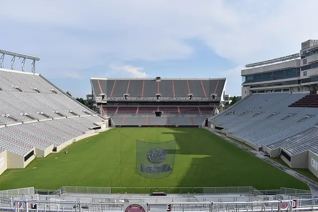
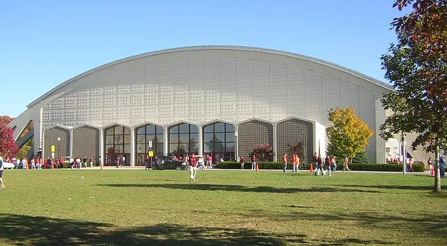

Ut Prosim (That I May Serve)
Virginia Tech
Most campus buildings are faced with Hokie Stone, a local limestone cut from a quarry the university has run since the 1950s.
- 5Buildings
- 1Tradition
- 1804Oldest · Solitude
- 1965Newest · Lane Stadium
Campus map and Look Around
Tap a numbered pin to see that building from the street with Apple Look Around.
Planning the visit
- Fly intoRoanoke-Blacksburg Regional Airport (ROA)
Roanoke-Blacksburg Regional, in Roanoke east of Blacksburg, is the nearest commercial airport.
- Getting aroundWalking / Blacksburg Transit
The campus around the Drillfield is walkable. Blacksburg Transit buses are fare-free for all riders on campus and around town.
- Colors and teams
The school colors are Chicago maroon and burnt orange, and the teams are the Hokies.
- Where to stayFind hotels near Virginia Tech on Expedia Compare on Booking.com Vacation rentals on Vrbo
Stamped! may earn a commission when you book through these links.
5 buildings to stamp
-
Photo: Ben Schumin from Montgomery Village, Maryland, USA, CC BY-SA 2.0, via Wikimedia Commons Burruss Hall
800 Drillfield Dr, Blacksburg, VA 24061
Completed in 1936 as the Teaching and Administration Building, Burruss Hall faces the Drillfield in Collegiate Gothic Hokie Stone. Its 3,003-seat auditorium hosts commencement and concerts.
- Built
- 1936
- Style
- Collegiate Gothic
- Today
- Administration Building and Auditorium
-
Photo: Eric T Gunther, CC BY 3.0, via Wikimedia Commons Lane Hall
280 Alumni Mall, Blacksburg, VA 24061
Built in 1888 as Barracks No. 1, the first dormitory of the college, this three-story brick building has a mansard roof and central tower. The Corps of Cadets still holds retreat in front of it.
- Built
- 1888
- Style
- Second Empire
- Stories
- 3
- Today
- Academic Offices
-
Photo: Quentin Stoeffler, CC BY-SA 3.0, via Wikimedia Commons Solitude
West Campus Dr, Blacksburg, VA 24061
The oldest building on campus, this log and frame house was begun about 1802 and enlarged by the Preston family into the 1850s, gaining a Greek Revival look. It is listed on the National Register of Historic Places.
- Built
- 1804
- Style
- Greek Revival
- Stories
- 2
- Today
- Historic House
-

Photo: Jmcgough21, CC BY-SA 4.0, via Wikimedia Commons Lane Stadium
285 Beamer Way, Blacksburg, VA 24060
Opened in 1965, the stadium is the home of Hokies football and sits about 2,057 feet above sea level.
- Built
- 1965
- Architect
- Carneal and Johnston; Smithey and Boynton
- Today
- Football Stadium
-

Photo: User:B, CC BY-SA 4.0, via Wikimedia Commons Cassell Coliseum
675 Washington St SW, Blacksburg, VA 24061
Opened in 1962 and finished in 1964 for $2.7 million, this arena seats 8,925 for Hokies basketball.
- Built
- 1962
- Architect
- Carneal and Johnston
- Today
- Arena
.jpg){kind=link}


1 tradition to check off
Stamped! keeps these as a checklist, so you can tick each one off on the visit.
Corps of Cadets Retreat
The Corps of Cadets holds its nightly retreat ceremony in front of Lane Hall, the old Barracks No. 1. Visitors can watch from the Upper Quad.
History
Founded 1872
From Wikipedia
Virginia Polytechnic Institute and State University, commonly referred to as Virginia Tech (VT), is a public land-grant research university with its main campus in Blacksburg, Virginia, United States. It was founded as the Virginia Agricultural and Mechanical College in 1872.
Game day
The app's quiz · 10 questions
How well do you know Virginia Tech?
The same quiz as in Stamped!: name the landmark, its architect, its style or the year it was finished. Every round is different.
Know Virginia Tech well?
Students and alumni know the traditions best. Suggest one we're missing, a building worth a stamp, a fix, or your own photo of a building. Every suggestion is checked before it goes into the app.
More ACC schools
- Boston College
- Clemson University
- Duke University
- Florida State University
- Georgia Institute of Technology
- North Carolina State University
- Southern Methodist University
- Stanford University
- Syracuse University
- University of California, Berkeley
- University of Louisville
- University of Miami
- University of North Carolina at Chapel Hill
- University of Notre Dame
- University of Pittsburgh
- University of Virginia
- Wake Forest University
Stamp all 5 on your visit.
Tour Virginia Tech in 3D before you go, add it to a college road trip and earn a passport stamp at every building. Free on iPhone, iPad and Mac.
Download on theApp StoreEnjoying the guides? Leave a tip to help keep new cities coming.